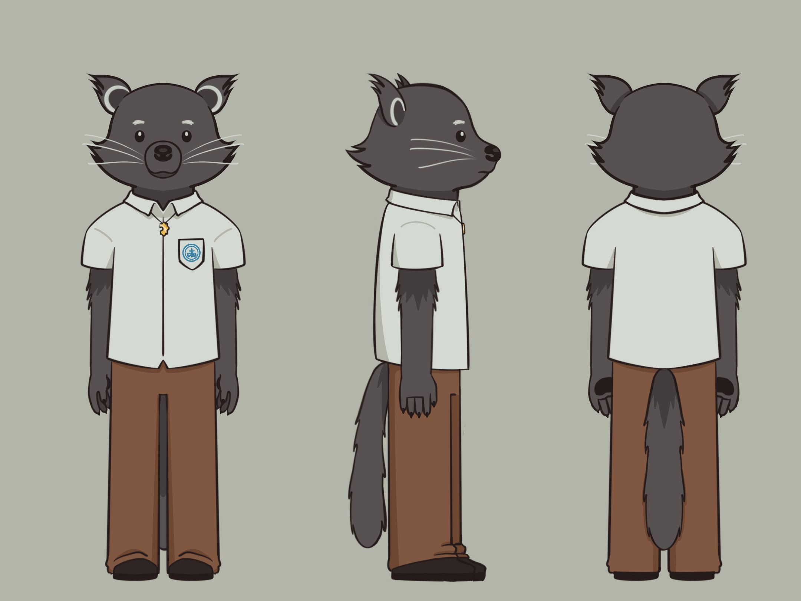
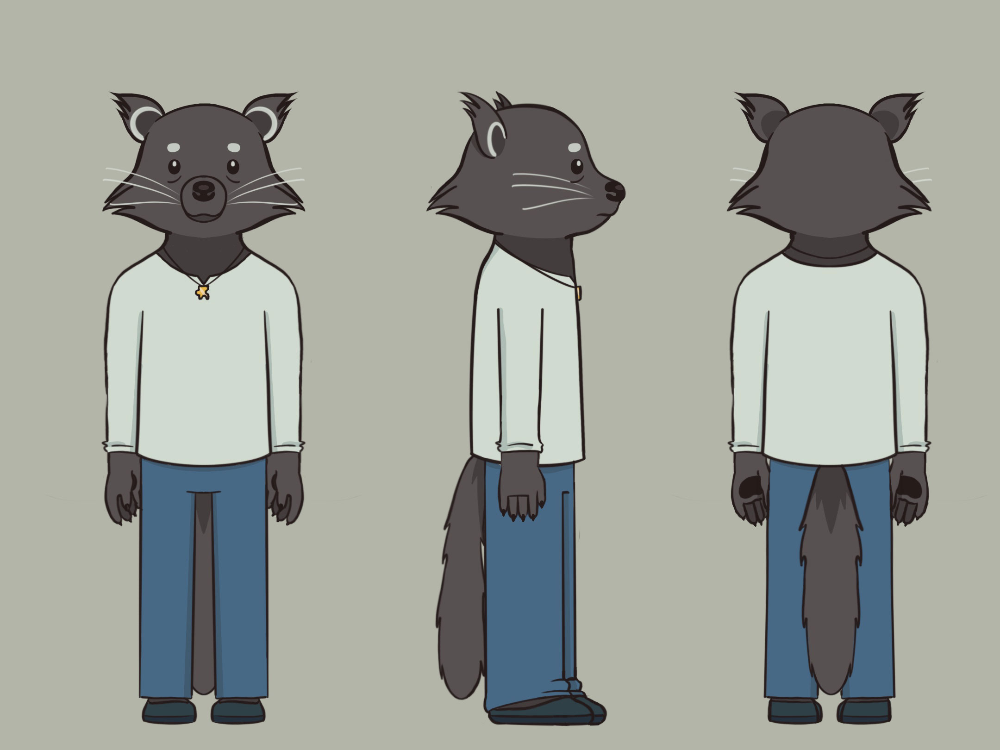
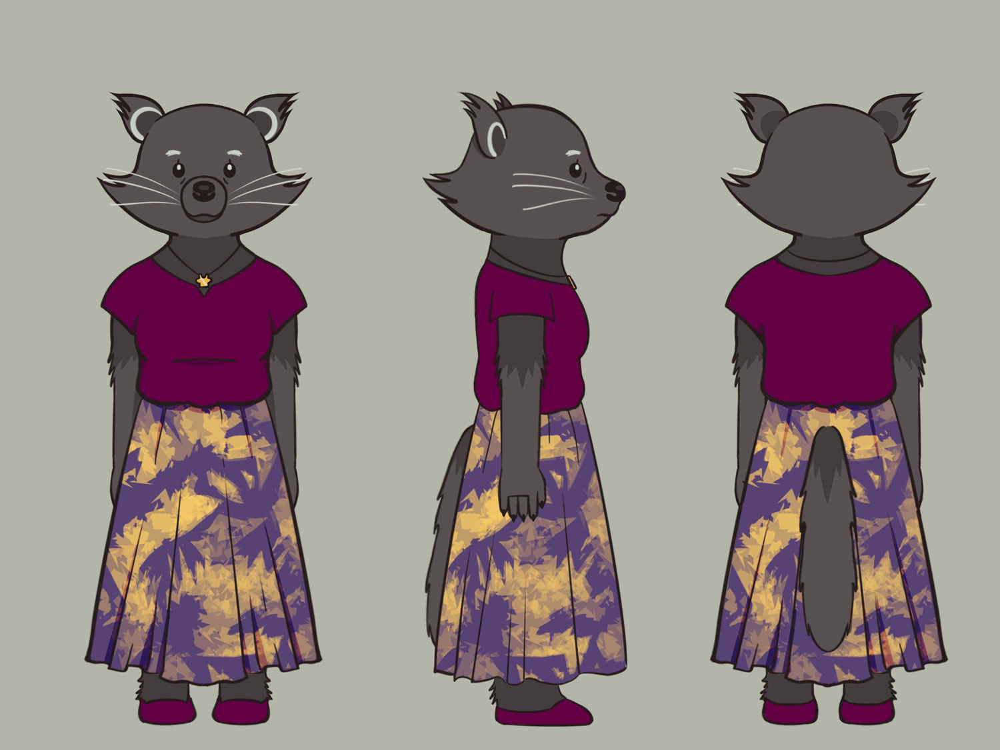
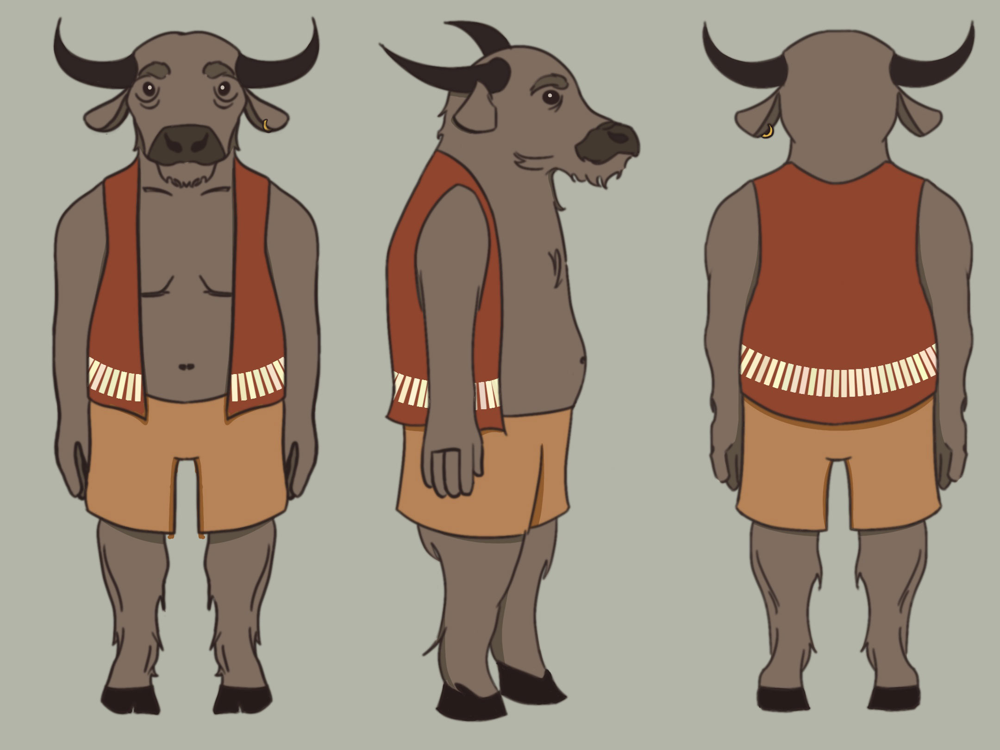
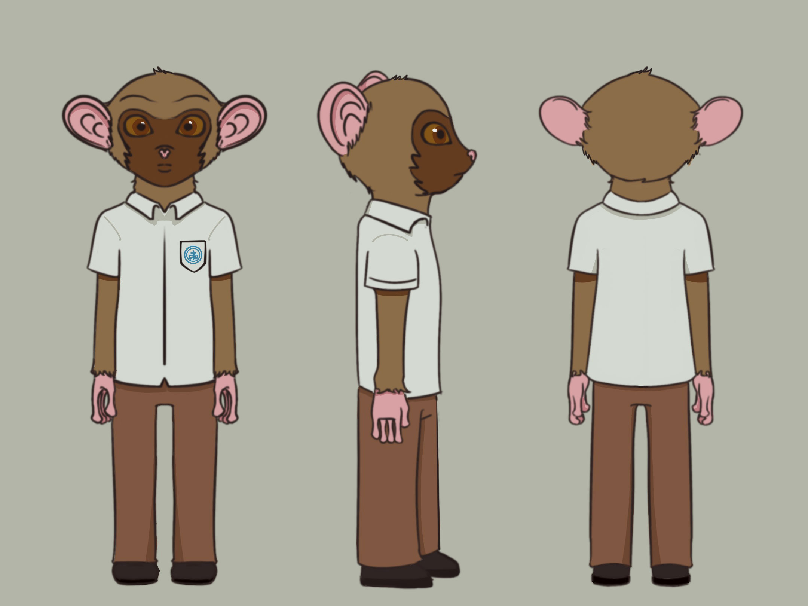

Meet the characters
Lito
Photo by Cameron Spencer/Getty Images
Our main protagonist and favorite carver. Real name being Carlito after his father but given the nickname “Lito” to avoid confusion. He and his family are based on the animal Binturong, also known as bearcats. Binturongs are native to the Philippines specifically in the island of Palawan.
Carlito
Photo from TassiloRau
Lito's father and owner of the only nearby sari-sari store within their area. He named his son after himself in the hopes of passing his namesake store onto Lito with no need to change the sign. He also has a nickname, Carlo, but only his wife is allowed to use it.
Aleya
Photo from Zoo Atlanta
Lito's mother. She has a tendency to overprotect Lito and often cups his face when she is nervous or concerned. She does this not only to show care but also because Lito's soft fur calms her down. It also gives her reassurance because she feels he cannot leave when she is holding his face.
Manong Leng
Photo by Hoth Cook/Wirestock
Lito's mentor and a failed artist. He owns a religious goods store with passing tourists being his most frequent buyers. He went to UP Lilipad to study fine arts against his family's wishes but did not have the strength to keep pursuing it as a full career. He is based on the animal Carabao, the national animal of the Philippines.
Enrico
Photo by Pierre Fidenci/Wikimedia
Lito's childhood best friend and classmate. He's known Lito since they were 5 but gradually saw less and less of him as they were growing up, prompting him to continuously ask Lito for hangouts. He is based on the animal Tarsier, they are native to the Philippines and cannot be found in any other country.